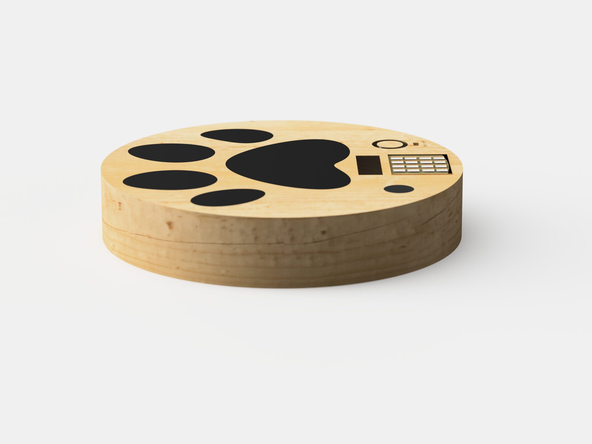

Dog Trainer
An automated dog trainer
Role
Designer
Tools
Arduino, Fusion 360
Duration
Spring 2020
How can we automate pet training?
For this project, our team designed an assistive device for elderly clients from the Osher Institute. After interviewing our client Cynthia, we decided to try and design a physical computing device to solve her dog Zimmy’s shoe-chewing problem. While she isn’t always home to supervise Zimmy, technology offered an opportunity to automate the training process.
How it works
Our dog trainer device senses the presence of an object, in this case shoes,
placed on top of it. If the object is moved, indicating Zimi is chewing on the object,
a high pitched alarm sound is triggered as negative reinforcement. The sound is at a
frequency that dogs can hear, so as to not disturb Cynthia. There is also a switch to turn
the alarm off allowing Cynthia to remove the object with triggering it.
Over time, the goal of the device is to train Cynthia’s dog to learn what
items he should not be chewing on.